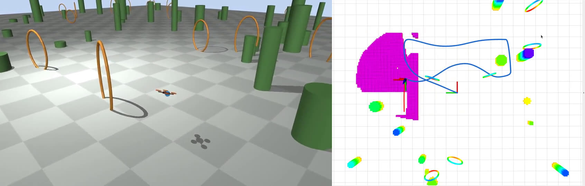

ROS Noetic · MuJoCo 4 · CMU planner · EGO-Planner
One navigation stack for legged robots and drones
Star Nav explores unknown spaces with a waypoint mission and a local planner for each kind of robot. CMU's local planner walks a quadruped and a humanoid through a house with a ramp and steps; EGO-Planner flies a quadrotor through a forest. All of it runs in simulation first, and each robot runs live in this page.



Live in your browser
MuJoCo, compiled to WebAssembly, simulates each robot in this page in real time, with the model, the world and the controller of the simulator: the manufacturers' walking policies for the legged robots, the flight controller for the quadrotor. No planner runs in the browser; the robot follows the path its planner led it along in a recorded mission. Drag to orbit, scroll to zoom.
Blue: the path of the recorded mission. Orange: the path walked in your browser.
Drive (legged robots) gives the walking policy your command in place of the path: W and S walk, A and D turn, Q and E step sideways, or use the buttons on the scene. Nothing avoids the walls then.
Results
Every robot runs the same mission, 12 waypoints over a 9 × 9 m area, as an automated test that fails on any contact with an obstacle, fall or waypoint timeout. The quadruped also maps the house with no waypoints given.
| Robot | Planner | Sensor | World | Mission |
|---|---|---|---|---|
| Quadruped · Lite3 | CMU local planner | Lidar | House, forest | 12/12, 0 contacts |
| Quadruped · Lite3 | CMU local planner | Lidar | House, no waypoints given | 98.6 % of the floor mapped, 0 contacts |
| Humanoid · T1 | CMU local planner | Lidar | House, forest | 12/12, 0 contacts |
| Humanoid · T1 | CMU local planner | Lidar | House, 10 missions | 8 complete; 2 falls going down the steps |
| Quadrotor | EGO-Planner | Depth camera or lidar | Forest | 12/12, 0 contacts |
Each robot's page has the videos, what was measured and what does not work yet.
Architecture
Three parts with one contract between them: the robot reports its pose and what it sees, and follows the commands its planner sends back. Only the bottom of the simulator changes from robot to robot.
A planner for each kind of robot
The mission and the planners never see ground truth. They get only what a real robot would: odometry and a lidar scan or depth image. The ground version of CMU's local planner walks the legged robots and EGO-Planner flies the drone, behind one interface.
Plain Python, no ROS
Runs on any OS or in Docker, with a browser viewer. Contacts with obstacles are counted, and every mission is an automated test that fails on any contact or fall.
Commands in, motion out
The walking robots get a walking velocity for the manufacturers' learned policies; to their planner, ramps and low steps are ground. The drone tracks position setpoints with a flight controller.
Quick start
The walking robots need Ubuntu 20.04 with ROS Noetic. Docker runs the quadrotor on Linux, macOS and Windows (WSL2). All options are in the simulation guide.
01Build (Ubuntu 20.04 + ROS Noetic)
The repository is the src folder of a catkin workspace.
git clone https://github.com/1nrobotics/star-nav.git ~/catkin_ws/src
cd ~/catkin_ws
source /opt/ros/noetic/setup.bash
rosdep install --from-paths src --ignore-src -r -y
catkin_make -DCMAKE_BUILD_TYPE=Release
source devel/setup.bash02Walk the house: quadruped or humanoid
The setup downloads each robot's model and walking policy from its manufacturer, and the planner's path set.
cd ~/catkin_ws/src
./scripts/setup_mujoco_env.sh --lite3 --t1 # once
./scripts/fetch_cmu_paths.sh # once
roslaunch star_nav_bringup exploration_lite3.launch use_rviz:=true
For the humanoid, launch exploration_t1.launch. Open
localhost:8080 and press
Start Exploration in RViz.
03Fly the forest: quadrotor
With the workspace of step 01:
cd ~/catkin_ws/src
./scripts/setup_mujoco_env.sh # once
roslaunch star_nav_bringup exploration_mujoco.launch use_rviz:=trueOr without ROS, a headless check in Docker; it exits non-zero on a failure or a collision:
git clone https://github.com/1nrobotics/star-nav.git
cd star-nav
./scripts/run_mujoco_smoke_test.sh